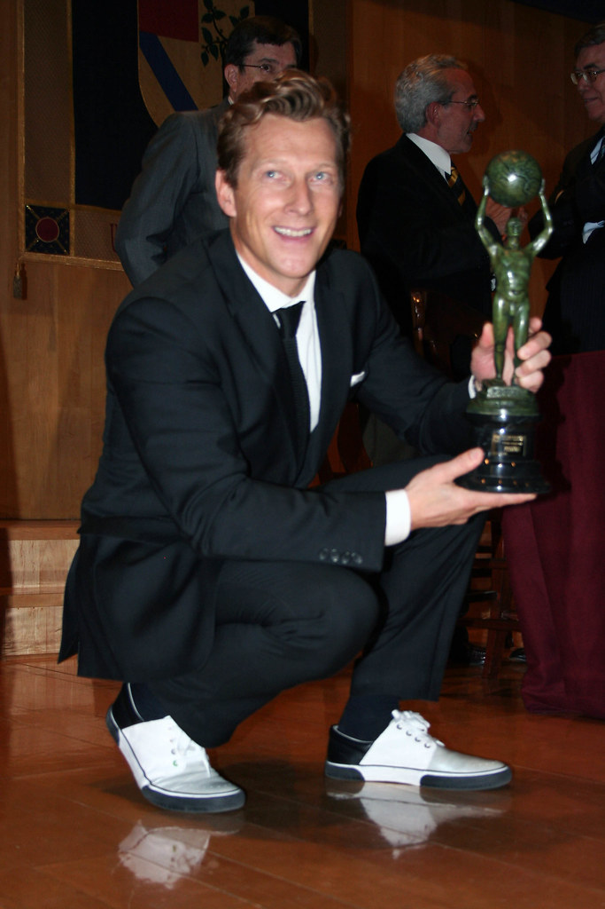

Premios
Magnus Scheving

Todos os premios do artista
Ao longo de sua carreira como atleta, Magnús Scheving conquistou importantes reconhecimentos na ginástica aeróbica, destacando-se em competições internacionais. Entre suas principais conquistas estão dois títulos de campeão europeu, em 1994 e 1995, além de uma medalha de prata no Campeonato Mundial de 1994. Também conquistou uma medalha de bronze no Campeonato Mundial de 1993 e o primeiro lugar no Campeonato Escandinavo de Ginástica Aeróbica, no mesmo ano. Essas conquistas demonstram seu talento, dedicação e destaque no cenário esportivo internacional. Posteriormente, sua experiência como atleta contribuiu para a criação de LazyTown, projeto que levou sua mensagem sobre saúde e atividade física ao público infantil.